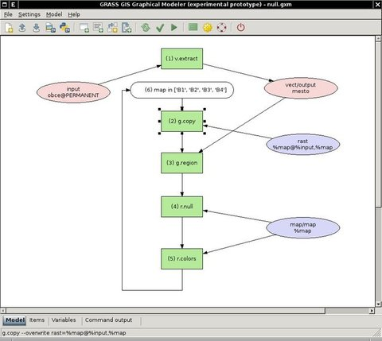

NAME
wxGUI.Modeler
DESCRIPTION
Note: wxGUI Modeler is currently under development. It's provided as
an experimental prototype.
The Graphical Modeler is
a wxGUI compoment which allows the
user to create, edit, and manage models. The modeler can be launched
from the menu File -> Graphical modeler or by clicking on
icon  in the toolbar.
in the toolbar.
The modeler currently allows you to:
- define data items (raster, vector, 3D raster maps)
- define actions (GRASS commands)
- define relations between data and action items
- define loops (eg. map series) and conditions (if-else statements)
- define model variables
- parameterize commands
- define intermediate data
- validate and run model
- store model properties to the file (GRASS Model File|*.gxm)
- export model to Python script
- export model to image file

SEE ALSO
wxGUI
wxGUI components
User-defined models available
from SVN.
See also
user wiki page
(especially various video
tutorials).
AUTHORS
Martin Landa, Czech Technical University in Prague, Czech Republic
$Date: 2013-04-17 23:12:55 -0700 (Wed, 17 Apr 2013) $
Main index - wxGUI index - Full index
© 2003-2013 GRASS Development Team